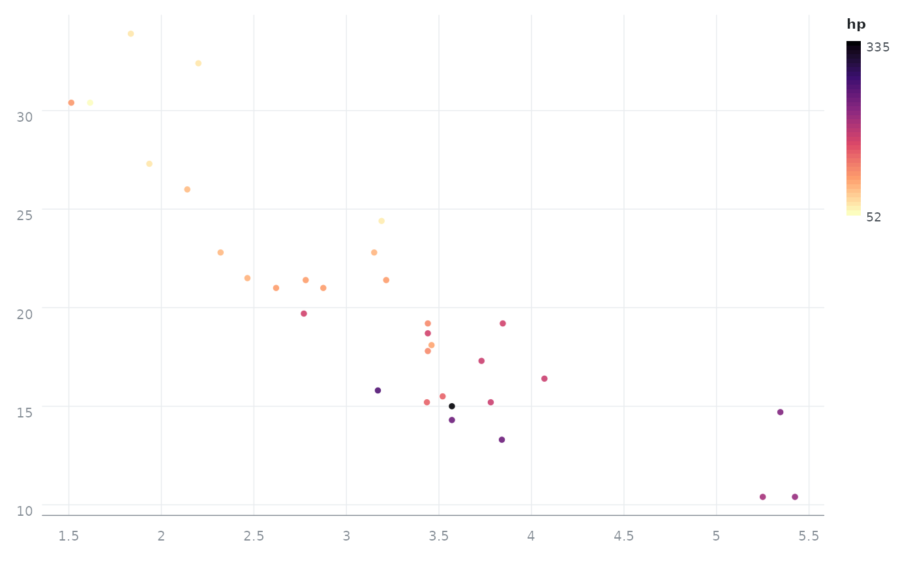
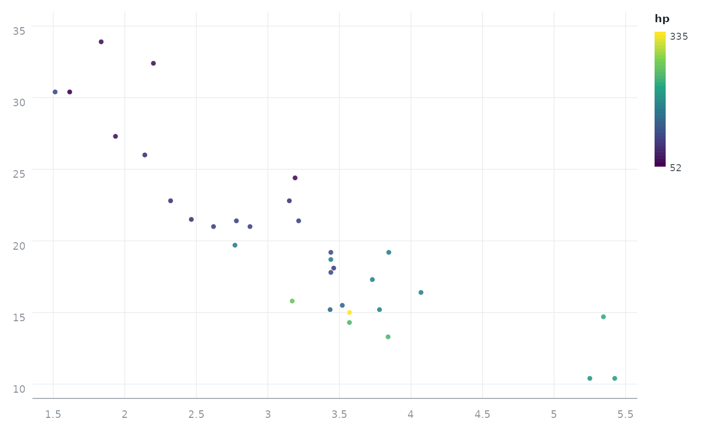

Scales control how data values are converted to visual values: which colours a variable spans, how large points become, and the limits and transformation of the axes.
Usage
orb_scale_colour(palette = "viridis", limits = NULL, reverse = FALSE)
orb_scale_fill(palette = "viridis", limits = NULL, reverse = FALSE)
orb_scale_size(range = c(2, 14), limits = NULL)
orb_scale_x(limits = NULL, trans = "identity", breaks = NULL, expand = 0.04)
orb_scale_y(limits = NULL, trans = "identity", breaks = NULL, expand = 0.04)Arguments
- palette
Palette name (see
orb_palettes()) or a character vector of colours to interpolate.- limits
Numeric length-2 vector giving the data range to map, or
NULLto use the observed range.- reverse
Reverse the direction of the palette.
- range
Length-2 numeric vector giving the smallest and largest radius in pixels, for
orb_scale_size().- trans
Axis transformation:
"identity"(default),"log10"or"sqrt".- breaks
Numeric vector of axis breaks, or
NULLfor automatic.- expand
Fraction of the data range added as padding at each end.
Examples
p <- orb(mtcars, x = wt, y = mpg, colour = hp) + orb_points()
p + orb_scale_colour("magma", reverse = TRUE)
#> <orb_spec>
#> data: 32 rows x 11 columns
#> mapping: x, y, colour
#> layers: points

p + orb_scale_y(limits = c(10, 35))
#> <orb_spec>
#> data: 32 rows x 11 columns
#> mapping: x, y, colour
#> layers: points
